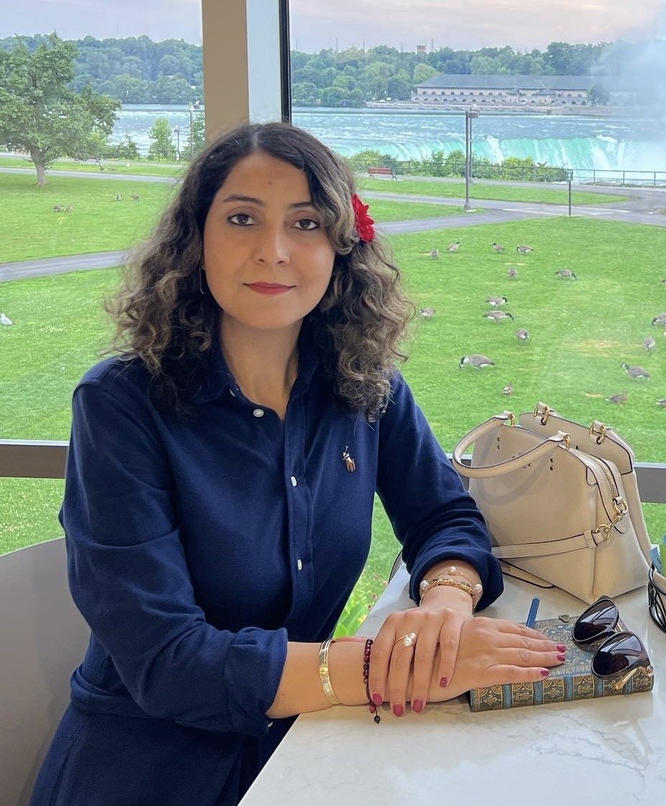

Saeede Eftekhari
Assistant Professor in Management Science (Information Systems)
A. B. Freeman School of Business, Tulane University
I study how information systems shape healthcare practices and digital communitie using mainly data-driven approaches.

Research
My research is organized around two primary streams in the Information Systems domain.
Health Information Exchanges
The first stream examines the impact of Health Information Exchanges (HIEs) on clinical practices, physicians’ strategic behavior, and patient decision-making. This research combines causal econometric modeling and social network analysis using large-scale longitudinal datasets mainly from Centers for Medicare & Medicaid Services, as well as qualitative study.
Social Media
The second research stream explores AI-enabled analyses of social media communication (e.g., machine learning, text analytics, and language modeling) to examine how digital interactions reflect and shape societal disruptions, including online mobilization and mental well-being during prolonged crises. This work draws on longitudinal social media data to study evolving digital behaviors and online communities.
Journal Publications
- S. Eftekhari, N. Yaraghi, R. Gopal, R. Ramesh. “Impact of Health Information Exchange Adoption on Referral Patterns.” Management Science, 69(3), 1615–1638, 2023.
- S. Eftekhari, N. Yaraghi, R. Singh, R. D. Gopal, R. Ramesh. “Do Health Information Exchanges Deter Repetition of Medical Services?” ACM Transactions on Management Information Systems, 8(1), 1–27, 2017.
- S. Eftekhari, M. R. Hasan Zade, M. Khashei. “Classification of Time-Course Gene Expression Data Using a Hybrid Neural-Based Model.” Review of Bioinformatics and Biometrics, 3, 1–8, 2014.
- M. Khashei, S. Eftekhari, J. Parvizian. “Diagnosing Diabetes Type II Using a Soft Intelligent Binary Classification Model.” Review of Bioinformatics and Biometrics, 1(1), 9–23, 2012.
Selected Work in Progress
- U. Etudo, S. Eftekhari, S. Bhattacharjee. “Follow the Leader or Follow the Peers? Mobilization Lifecycle of Online Armies in the Social Media Age.”
- S. Eftekhari, R. Ramesh. “Patient Flux at Primary Care: Impact of Health Information Exchanges.”
- S. Eftekhari, J. Tacheva, C. Senot. “An IT Artifact for Monitoring Depressive Symptom Trajectories During a Prolonged Crisis.”
When I am not doing research or teaching, I enjoy nature, poetry, watercolor painting, and spending quiet morning time in coffee shops reading and writing.